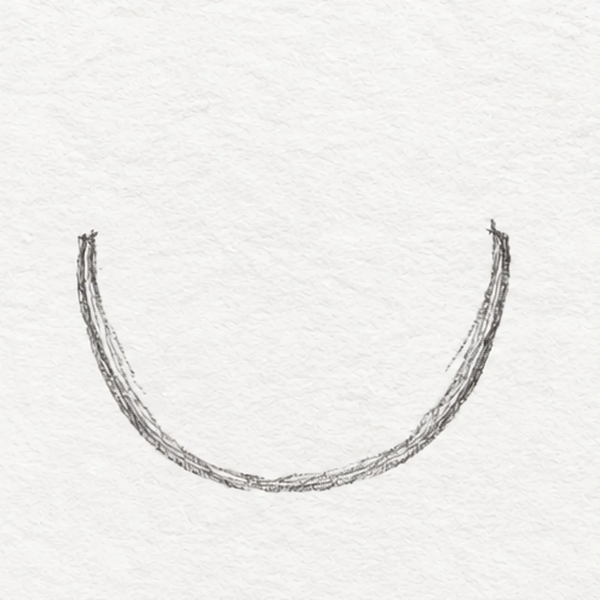
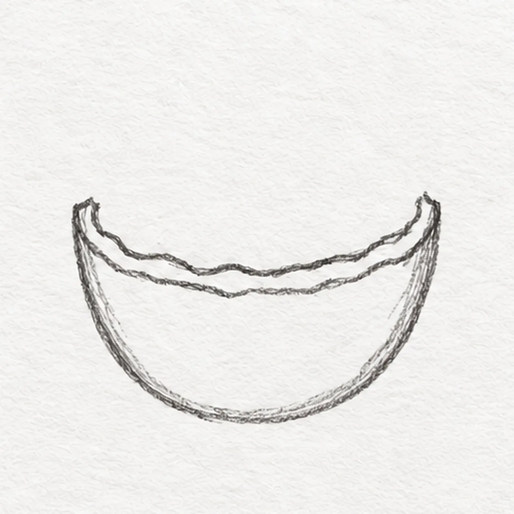
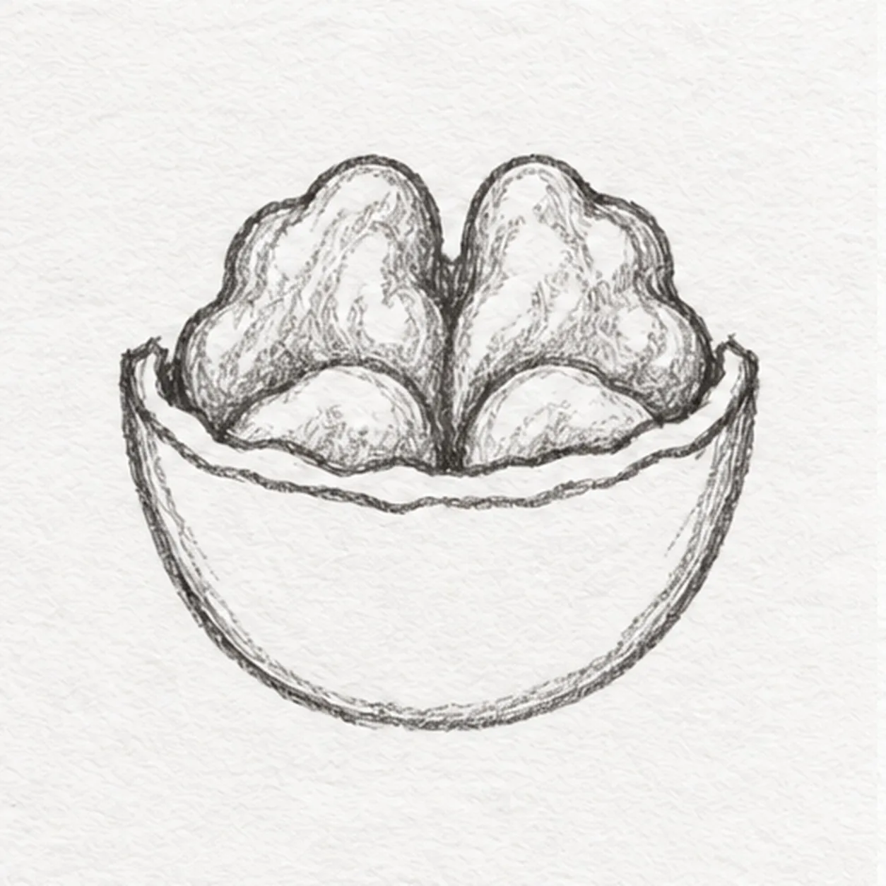
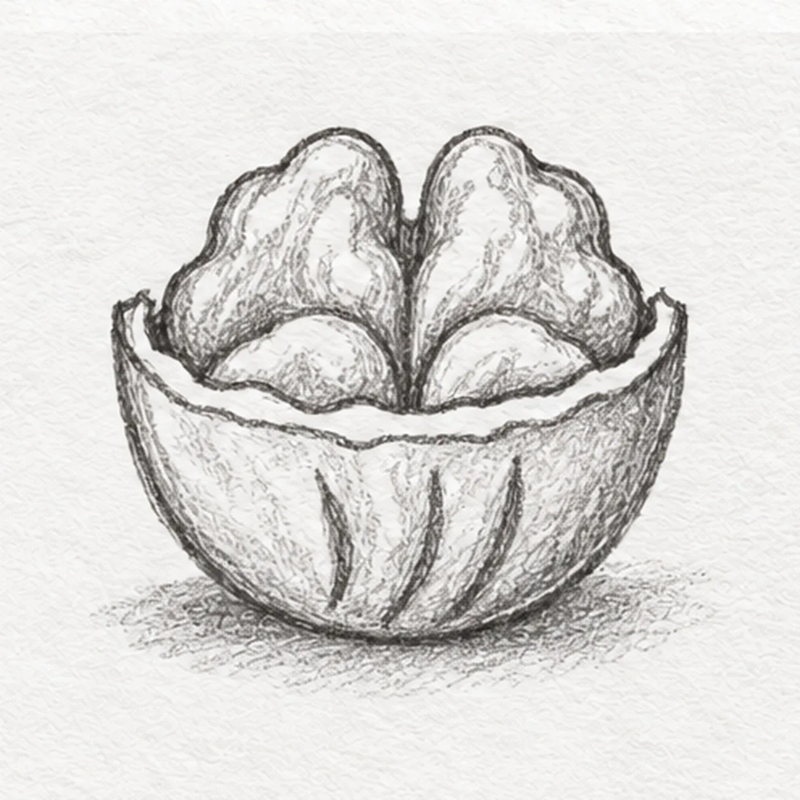

From the archive
Let's draw a cracked walnut
Treat this as one small practice round: build the subject lightly, notice the shapes, then darken only the lines that help the finished sketch.
-
01

Set the open shell cup
Start at the left upper end, curve down through a broad base, then rise to a matching right end. Leave the top open for the rim and kernel.
Sketch tip: Keep both upper ends at the same height so the kernel can sit securely in the opening.
-
02

Break the rim
Connect the open ends with a low, slightly uneven pencil line. Echo that route just inside the cup to show the shell thickness.
Sketch tip: The inner lip stays close to the upper rim; leave clear paper above it for the kernel.
-
03

Nest the kernel
Inside the rim, draw two rounded upper lobes and two smaller lower lobes that meet at a short center crease. Keep the kernel seated in the cup.
Sketch tip: Seat the two small lower lobes against the inner rim so the kernel feels held by the shell.
-
04

Texture and ground the shell
Pull three short ridges down the cup, following its curve. Set a broken pencil shadow beneath the base without changing the kernel or rim.
Sketch tip: Follow the cup's curve with the three ridges and keep the shadow separate from its base.
-
05

Shade the walnut
Shade the existing shell warm brown, leave pale paper on the kernel's raised lobes, and deepen the fixed rim and broken shadow with graphite.
Sketch tip: Use broken pencil strokes so paper grain shows through the shell and kernel.